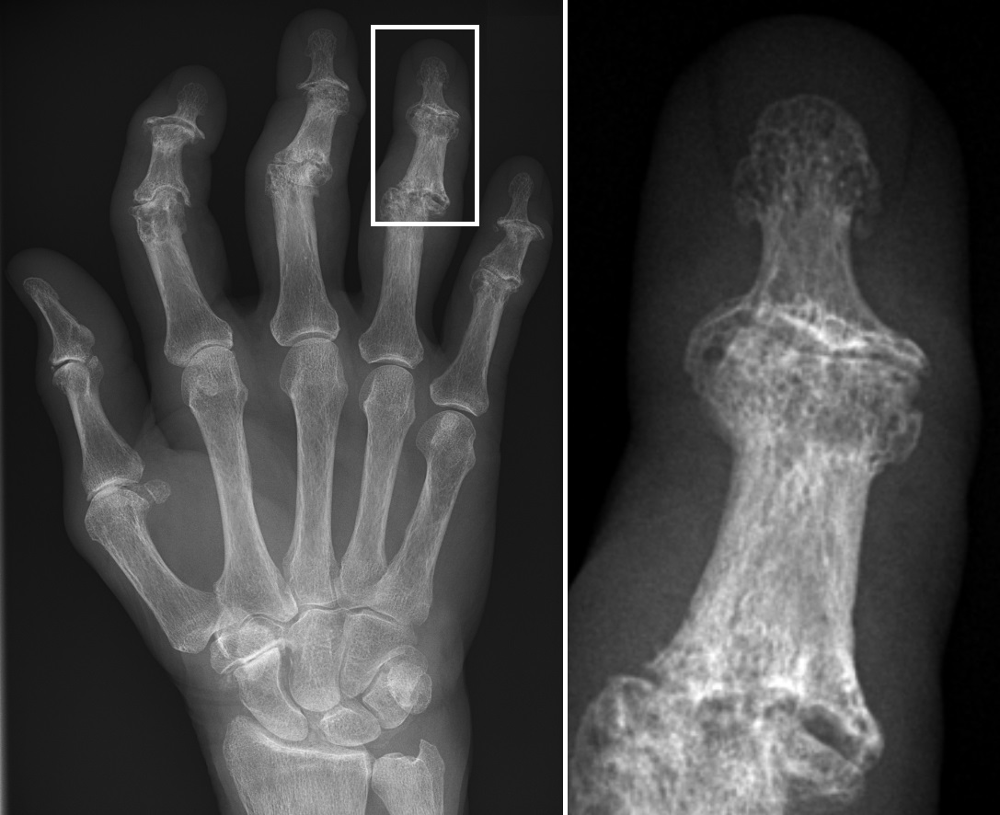

Ficha del catálogo
Artrosis de las manos
- Sistema
- Óseo
- Modalidad
- RX
- Región
- Mano
- Dificultad
- Básico
La artrosis de las manos tiene una distribución muy característica que permite reconocerla de un vistazo y distinguirla de las artritis inflamatorias. Afecta a las articulaciones interfalángicas distales, a las proximales y a la trapeciometacarpiana del pulgar, y respeta las metacarpofalángicas y el carpo. Es más frecuente en mujeres a partir de la quinta década y con frecuencia hay agregación familiar. Existe una variante erosiva más agresiva que cursa con brotes inflamatorios y deformidad.
Técnica
Proyección dorsopalmar de ambas manos en una sola imagen, complementada con oblicuas. El estudio comparativo facilita reconocer el patrón de distribución.
Qué observar
- Pinzamiento de las interfalángicas distales con osteofitos dorsales palpables
- Afectación de la articulación entre trapecio y primer metacarpiano
- Esclerosis subcondral y geodas en las superficies afectadas
- Preservación relativa de las metacarpofalángicas y del carpo
- Subluxación y desviación lateral de las falanges distales
- Erosiones centrales con aspecto de ala de gaviota en la forma erosiva
Hallazgos
Pinzamiento, esclerosis subcondral y osteofitos en interfalángicas distales, proximales y trapeciometacarpiana, con densidad ósea conservada.
Perlas
La densidad ósea normal y la ausencia de osteopenia periarticular apoyan el origen degenerativo. En la artrosis erosiva las erosiones son centrales y se acompañan de hueso neoformado, al contrario que en la artritis reumatoide, donde son marginales y no hay reparación ósea.
Diagnóstico diferencial
- Artritis reumatoide
- Predomina en metacarpofalángicas y carpo, con osteopenia y erosiones marginales.
- Artritis psoriásica
- Afecta interfalángicas distales pero con proliferación ósea y periostitis.
- Artropatía gotosa
- Erosiones en sacabocados con bordes sobresalientes y nódulos de partes blandas.
Simuladores
- Osteofitos prominentes que simulan cuerpos libres
- Superposición de partes blandas engrosadas
- Secuelas de traumatismos antiguos en un solo dedo
Por modalidad
- RX
- Suficiente para el diagnóstico y para el seguimiento
- US
- Detecta sinovitis en los brotes de la forma erosiva
- RM
- Reservada para casos dudosos frente a artropatía inflamatoria
Protocolo
Dorsopalmar de ambas manos y oblicuas. No se requiere estudio adicional si el patrón es característico.
Clasificación
Se distingue la forma nodular común, con engrosamientos en interfalángicas distales y proximales, de la forma erosiva, con destrucción central y colapso articular.
Errores frecuentes
- Confundir la forma erosiva con una artritis inflamatoria
- No valorar la articulación del pulgar, causa frecuente de dolor y limitación
- Informar como artrosis un patrón que afecta al carpo y a las metacarpofalángicas

mano artrosis interfalangicas distales rizartrosis artrosis erosiva osteofitos patron de distribucion